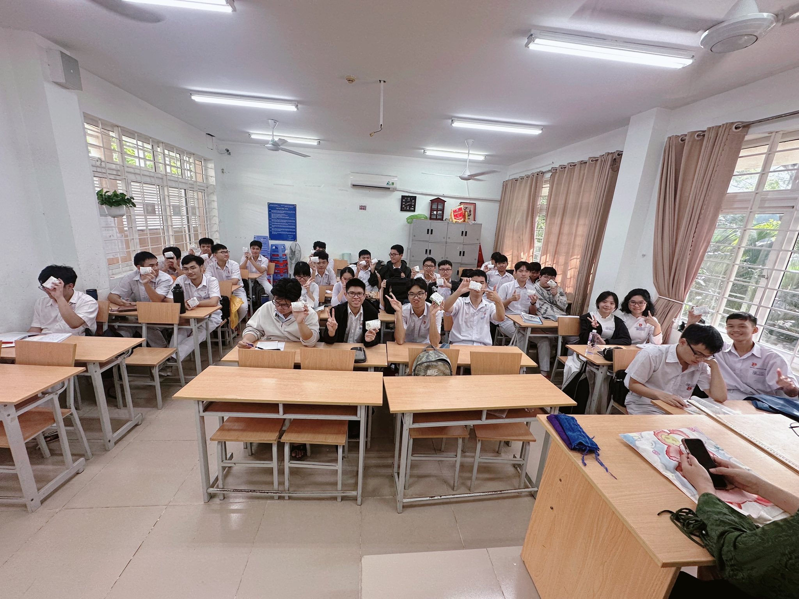

Ý nghĩa của lòng biết ơn trong học đường
Lòng biết ơn là một trong những phẩm chất đạo đức quan trọng nhất của con người. Đối với học sinh, biết ơn thầy cô không chỉ là biểu hiện của lễ nghĩa, mà còn là nền tảng giúp hình thành nhân cách và lối sống tích cực.

Thầy cô là người truyền đạt kiến thức, đồng thời cũng là người định hướng tư duy, giáo dục đạo đức và giúp học sinh nhận ra giá trị của bản thân. Mỗi bài học không chỉ mang ý nghĩa học thuật, mà còn là bài học về cách sống và cách làm người.
“Biết ơn không chỉ nằm ở lời nói, mà thể hiện qua hành động và thái độ sống.”
Khi học sinh biết trân trọng công lao của thầy cô, các em sẽ có ý thức học tập nghiêm túc hơn, biết sống có trách nhiệm và không ngừng nỗ lực vươn lên. Đó chính là ý nghĩa sâu xa của đạo lý “Uống nước nhớ nguồn” trong giáo dục.